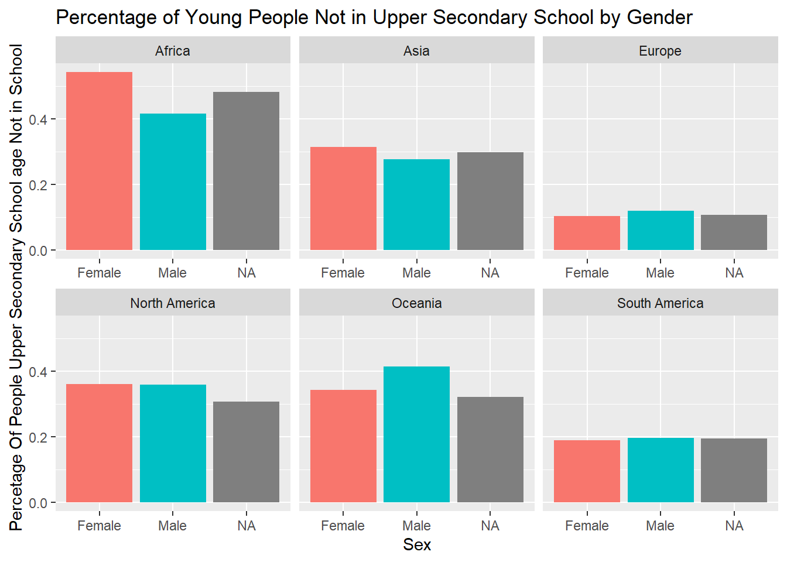
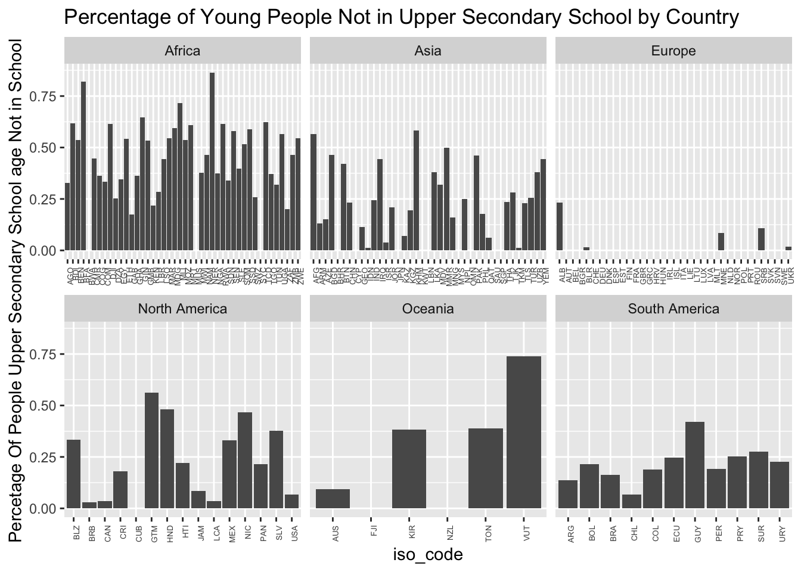
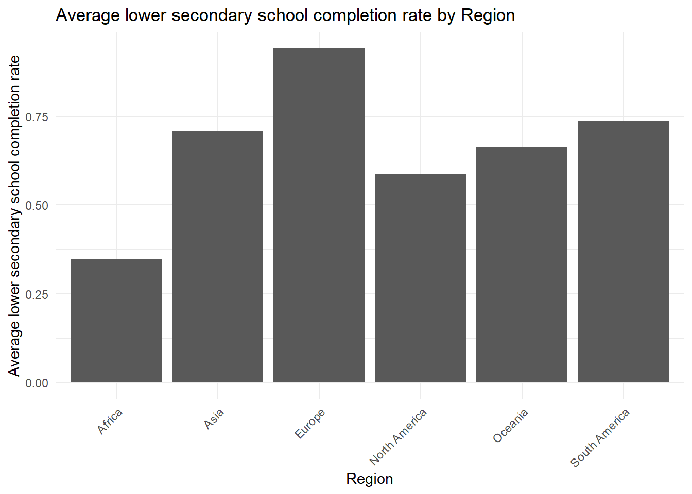
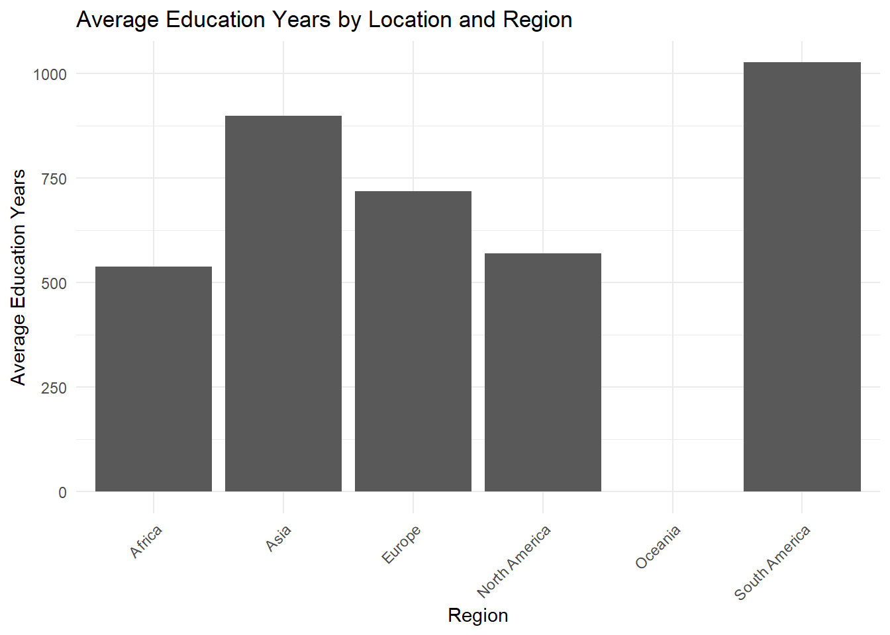

Analysis
In this page, we analyze our data in more depth using more sophisticated statistical techniques.

Section 1: Analysis of Education Statistics
Driven by the increasing interest in global education disparities, our team has decided to explore the educational landscape across various countries around the world. Education is a cornerstone of societal development, and by examining comprehensive datasets (please see the data tab to read more about our datasets), we aim to uncover the factors that contribute to education outcomes and identify disparities that may hinder equitable access to quality education. Our project seeks to provide insights that not can potentially inform policymakers, educators, and stakeholders about the key elements influencing educational success.
Our project begins with section 1, where we will identify educational trends by the continent and attempt to answer why these continents are the way they are by exploring different regions and countries within each continent.
In section 2, we will model our data with different statistical models, and uncover insights that are harder to identify on the surface
Section 1.1: PISA Scores and Literacy Rates
The first step to understanding economic disparties is to get a general understanding of what parts of the world generally tend to have better education than others. There are multiple ways of measuring this, but reliable way to measure this is with PISA scores and literacy rates. Both of these metrics serve as standardized bench marks for the whole world!

It is clear that in terms of PISA scores, Oceania and Europe perform the best, while Africa performed the worst, and in terms of literacy rate, all of the continents performed relatively equally while Africa performed the worst again. Now that you have a general understanding of where education is better and where education is worse, we can now get into more specific statistics.
Section 1.2: Percentage of People who did not Complete Primary School
The next step of analyzing education around the world was to simply look at the percentage of (i) children and young people aged 3-5 years above primary school graduation age and (ii) young people aged 15-24, who have completed primary school.


As you can see, Europe consistently ranks significantly higher than all of the other continents, while North America, South America, and Asia rank below Europe but higher than Africa. However, if we take a deeper look into the sub regions of Africa, we find some interesting outcomes.


As you can see, when looking at the percentage of people who finish primary school, the percentages are significantly lower for the Sub-Saharan African countries compared to the Northern African countries. It seems like Sub-Saharan Africa may be the reason Africa shows up so low in many of the plots in the first section. In fact, Northern Africa seems to be on par in terms of primary school completion rate when compared to the rest of the continents in the world, but Sub-Sahara Africa does not seem to be on par. This difference in regions suggests that much attention should actually be directed towards Sub-Saharan Africa rather than Africa as a whole.
The good news is that all countries seem to have a slow yet steady increase in their primary school completion rate which is great to see.
The next step is to analyze the mean years of education of each region.
Section 1.3: Years of Edcuation
After just two sections, it seems that there is a trend: Europe tends to have the “best education” while Africa seems to have “the worst education.” We will now explore average years of education as another measure of education.

This graph shows a similar result to the other graphs: Africa again ranks as the lowest. However, there are many reasons why this may be the case. For example, if we look mean years of education in rural areas vs. mean years of education in urban areas, we see that Africa has the largest discrepancy in this area.

This large discrepancy in specifically Africa is so large that it could be bringing Africa down in total mean years of education. However, it is certainly worth noting that Africa’s urban mean years of education is still not to par with most other regions in the world, meaning Africa as a whole needs improvement in their education system.
The next step is to look at learning achievements as a mesure of level of education.
Section 1.4: Learning Achievment
In Section 1.1, we explored PISA scores around the world, but the UNESCO dataset also offers a benchmark standardized test that we can explore. There are three subjects (math, science, and reading), and there are 4 levels for each one, with each level getting increasingly difficult. The graphs below show the scores by continent for the different level math examx.

It is clear from these graphs that Oceania and Europe have the highest test scores while Africa and South Ameirca by far have the lowest test scores. It is completely expected for test scores to drop as the level gets harder and harder (level 1-4), but what is concerning is that in level 4, both Africa and South America are almost at an average of 0. In levels 1-3, both Africa and South America are at least some what on par with the other continents, but in the fourth level, they are signfiicantly lower than every other continent. This suggests that both Africa and South America’s education gets worse when education gets to a higher level. This could be a key point of interest for these two continents.


These graphs give us a better breakdown as to why the scores appear the way they do. Opposite of what we have seen before, for passing the level 4 math test, it seems as though the region does not affect the continent’s performance dramatically. This implies that Africa and South America need better higher education systems all over the continent and not just in particular regions.
Section 1.5: Percent of Students not in School
Another important metric of education is the percentage of students who are and are not in school. Regardless of academic outcome (GPA, test scores, etc.) It is incredibly important that younger people are even attending school to begin with. UNESCO provides data on attendance rates for primary school, lower secondary school, and upper secondary school.
$title
[1] "Percentage of Young People Not in Primary School"
$subtitle
[1] "This data only includes data on young people"
attr(,"class")
[1] "labels"
$title
[1] "Percentage of YoungPeople Not in Lower Secondary School"
$subtitle
[1] "This data only includes data on young people"
attr(,"class")
[1] "labels"
$title
[1] "Percentage of Young People Not in Upper Secondary School"
$subtitle
[1] "This data only includes data on young people"
attr(,"class")
[1] "labels"
As you can see, Africa has the highest percentage of not attending school for all three categories, and Europe has the lowest. A suprising result in this metric is how South America has the second lowest non-attendane rate which is a good thing. While they ranked lower in other metrics such as their test scores, it is clear that at the very least, South America is doing a good job getting their students to at least attend school. Let’s breka this down further by looking at Rural vs. Urban areas.

Similar to what we observed in section 1.3 the rural areas perform worse in this metric; however, it is worth noting that rural areas are performing even worse in this metric than the mean years of education section. For example, in North America and South America, the Rural non-attendance rate is almost half of non-attendance rate for urban areas. This implies that Rural areas need significantly more work than non-rural areas. Let’s now break it down by gender.

It seems that The Americas and Europe do a good job keeping their kids in school, but North America’s rate is high in general. It seems like it has the second highest average rate out of all the continents which is a bit concerning. While they are doing a good job being equal among sex, they are not doing a great job keeping kids in school in general. On the other hand, Africa, Asia, and Oceania have a considerable discrepancy in rate sex. This suggests that these continents may have some sexism in their education systems.

When looking at discrepancies across each country in each continent, it is clear that every continent has multiple countries that have extremely high rates of not being in school as well as multiple countries that have extremely low rates. While some continents have more countries with higher rates than others, what is clear that every continent has countries with poor education.
Section 1.6: Top countries in each section
We have analyzed continents as a whole, but now lets analyze each continent’s lowest performers in each category.
Bottom 3 countries in each continent with lowest primary school completion rate
| region | country | complete_prim | rank |
|---|---|---|---|
| Africa | Liberia | 0.2291407 | 1 |
| Africa | Niger | 0.2348941 | 2 |
| Africa | Chad | 0.2350572 | 3 |
| Asia | Afghanistan | 0.5104556 | 1 |
| Asia | Pakistan | 0.5843212 | 2 |
| Asia | Cambodia | 0.6162612 | 3 |
| Europe | Albania | 0.9742778 | 1 |
| Europe | Montenegro | 0.9898302 | 2 |
| Europe | Serbia | 0.9959805 | 3 |
| North America | Haiti | 0.3944480 | 1 |
| North America | Guatemala | 0.6732015 | 2 |
| North America | Nicaragua | 0.6776326 | 3 |
| Oceania | Vanuatu | 0.8169209 | 1 |
| Oceania | Kiribati | 0.9467611 | 2 |
| Oceania | Fiji | 0.9874556 | 3 |
| South America | Suriname | 0.8031490 | 1 |
| South America | Brazil | 0.8113292 | 2 |
| South America | Paraguay | 0.8799102 | 3 |
Bottom 3 couries in each continent with lowest mean years of education
| region | country | mean_years_educ | rank |
|---|---|---|---|
| Africa | Niger | 1.808006 | 1 |
| Africa | Burkina Faso | 2.347315 | 2 |
| Africa | Mali | 2.410002 | 3 |
| Asia | Afghanistan | 4.547361 | 1 |
| Asia | Nepal | 5.895463 | 2 |
| Asia | Pakistan | 6.002957 | 3 |
| Europe | Albania | 10.390306 | 1 |
| Europe | Serbia | 13.655235 | 2 |
| Europe | Ukraine | 13.874593 | 3 |
| North America | Guatemala | 6.572728 | 1 |
| North America | Haiti | 6.812426 | 2 |
| North America | Honduras | 6.991532 | 3 |
| Oceania | Australia | 12.417176 | 1 |
| Oceania | Fiji | NaN | 2 |
| Oceania | Kiribati | NaN | 3 |
| South America | Guyana | 9.512641 | 1 |
| South America | Brazil | 9.540023 | 2 |
| South America | Colombia | 9.931102 | 3 |
Top 3 countries in Each Continent of Lowest Passing rate of Level 1 Math Test
| region | country | math_level1 | rank |
|---|---|---|---|
| Africa | Ghana | 0.2213786 | 1 |
| Africa | South Africa | 0.3452023 | 2 |
| Africa | Niger | 0.4072104 | 3 |
| Asia | Pakistan | 0.2856470 | 1 |
| Asia | Philippines | 0.3407591 | 2 |
| Asia | Kuwait | 0.4653052 | 3 |
| Europe | Montenegro | 0.7646212 | 1 |
| Europe | Romania | 0.7872241 | 2 |
| Europe | Bulgaria | 0.8001682 | 3 |
| North America | Honduras | 0.3976985 | 1 |
| North America | Panama | 0.4678184 | 2 |
| North America | Mexico | 0.7002330 | 3 |
| Oceania | New Zealand | 0.8943537 | 1 |
| Oceania | Australia | 0.9132463 | 2 |
| Oceania | Fiji | NaN | 3 |
| South America | Brazil | 0.5574790 | 1 |
| South America | Peru | 0.5754379 | 2 |
| South America | Argentina | 0.5956867 | 3 |
Top 3 Countries in Each Continent of Percentage of People Not in Primary School
| region | country | not_in_prim | rank |
|---|---|---|---|
| Africa | South Sudan | 0.7504588 | 1 |
| Africa | Liberia | 0.6322090 | 2 |
| Africa | Somalia | 0.5401778 | 3 |
| Asia | Afghanistan | 0.3667935 | 1 |
| Asia | Pakistan | 0.3079629 | 2 |
| Asia | Timor-Leste | 0.2362871 | 3 |
| Europe | Belarus | 0.0826894 | 1 |
| Europe | Albania | 0.0667680 | 2 |
| Europe | Ukraine | 0.0610106 | 3 |
| North America | Haiti | 0.1998055 | 1 |
| North America | Guatemala | 0.0967366 | 2 |
| North America | Nicaragua | 0.0949205 | 3 |
| Oceania | Vanuatu | 0.1354130 | 1 |
| Oceania | Kiribati | 0.0316477 | 2 |
| Oceania | Tonga | 0.0274431 | 3 |
| South America | Bolivia | 0.0621273 | 1 |
| South America | Colombia | 0.0598511 | 2 |
| South America | Peru | 0.0381532 | 3 |
Some countries that appear more than 3 times on these 4 tables are Niger, Pakistan, Afganistan, Haiti… If these countries are appearng the lowest on all of these tables multiple times, these are clearly the countries that require the most help in terms of education.
Section 2: Modeling
library(car)Warning: package 'car' was built under R version 4.3.3Loading required package: carDataWarning: package 'carData' was built under R version 4.3.3
Attaching package: 'car'The following object is masked from 'package:dplyr':
recodeThe following object is masked from 'package:purrr':
somelibrary(caret)Warning: package 'caret' was built under R version 4.3.3Loading required package: lattice
Attaching package: 'caret'The following objects are masked from 'package:yardstick':
precision, recall, sensitivity, specificityThe following object is masked from 'package:purrr':
liftlibrary(ggplot2)
library(dplyr)
library(readxl)
library(MLmetrics)Warning: package 'MLmetrics' was built under R version 4.3.3
Attaching package: 'MLmetrics'The following objects are masked from 'package:caret':
MAE, RMSEThe following object is masked from 'package:base':
Recalllibrary(GGally)Warning: package 'GGally' was built under R version 4.3.3Registered S3 method overwritten by 'GGally':
method from
+.gg ggplot2Thesis: African areas have poor educational resources compared with other regions in the World. Our investigation will delve into the factors contributing to poor educational resources, particularly in African regions, and will evaluate whether Africa indeed has the most challenging educational conditions compared to the rest of the world.
Section 2.1: Model1
Hypothesis 1: Factors that will affect the lower secondary school completion rate: primary school completion rate_v2(young people who are 3-5 ages above the normal primary graduation age[prolly neagtively affect the lower secondary school completion rate]), big_region, wealth, gender, and Urbanicity
Expectation: comp_prim_v2_m will positively affect comp_lowsec_v2_m. In region of Africa, the area of rural, the gender of female, or the quintile 1 in Wealth will negatively affect comp_lowsec_v2_m.
-Continuous variable: comp_prim_v2_m
-Categorical variable: wealth(by level 1-5), sex(female/male), region(by continents), Location(=urbanicity by rural/urban)
library(car)
#group by wealth, Big region
Location_data <- merged_data %>%
filter(category == 'Location & Sex & Wealth')
####MODEL1
model1 <- lm(comp_lowsec_v2_m ~ as.factor(region) + as.factor(Location) + as.factor(Sex) + as.factor(Wealth) + comp_prim_v2_m, data = Location_data)
summary(model1)
Call:
lm(formula = comp_lowsec_v2_m ~ as.factor(region) + as.factor(Location) +
as.factor(Sex) + as.factor(Wealth) + comp_prim_v2_m, data = Location_data)
Residuals:
Min 1Q Median 3Q Max
-0.67342 -0.07977 0.02010 0.09152 0.39425
Coefficients:
Estimate Std. Error t value Pr(>|t|)
(Intercept) -0.232695 0.007489 -31.070 < 2e-16 ***
as.factor(region)Asia 0.092947 0.006050 15.362 < 2e-16 ***
as.factor(region)Europe 0.198130 0.014221 13.933 < 2e-16 ***
as.factor(region)North America 0.011440 0.007802 1.466 0.142649
as.factor(region)Oceania 0.143052 0.037197 3.846 0.000122 ***
as.factor(region)South America 0.140285 0.007011 20.010 < 2e-16 ***
as.factor(Location)Urban 0.020791 0.004415 4.710 2.57e-06 ***
as.factor(Sex)Male 0.003602 0.004164 0.865 0.387033
as.factor(Wealth)Quintile 2 0.002351 0.007122 0.330 0.741322
as.factor(Wealth)Quintile 3 0.009989 0.007108 1.405 0.160043
as.factor(Wealth)Quintile 4 0.040039 0.007209 5.554 2.99e-08 ***
as.factor(Wealth)Quintile 5 0.096784 0.007521 12.869 < 2e-16 ***
comp_prim_v2_m 0.940660 0.010707 87.856 < 2e-16 ***
---
Signif. codes: 0 '***' 0.001 '**' 0.01 '*' 0.05 '.' 0.1 ' ' 1
Residual standard error: 0.1273 on 3726 degrees of freedom
(28612 observations deleted due to missingness)
Multiple R-squared: 0.853, Adjusted R-squared: 0.8525
F-statistic: 1802 on 12 and 3726 DF, p-value: < 2.2e-16###Bar graph to show Africa's average literacy_1524
group_data <- merged_data %>%
filter(category == 'Location & Sex & Wealth') |> group_by(region) %>%
summarise(mean_comp_lowsec_v2_m = mean(comp_lowsec_v2_m, na.rm = TRUE),count_non_missing = sum(!is.na(comp_lowsec_v2_m)), .groups = 'drop')
ggplot(group_data, aes(x = region, y = mean_comp_lowsec_v2_m)) +
geom_bar(stat = "identity", position = position_dodge()) +
labs(title = "Average lower secondary school completion rate by Region",
x = "Region", y = "Average lower secondary school completion rate") +
theme_minimal() +
theme(axis.text.x = element_text(angle = 45, hjust = 1))
#broom::glance(model1)
#broom::augment(model1, new_data = grouped2)
vif(model1) GVIF Df GVIF^(1/(2*Df))
as.factor(region) 1.683944 5 1.053496
as.factor(Location) 1.124812 1 1.060572
as.factor(Sex) 1.000401 1 1.000201
as.factor(Wealth) 1.285657 4 1.031907
comp_prim_v2_m 1.931383 1 1.389742Section 2.1.1: Model1 Formula
comp_lowsec_v2_m = b0 + b1 x region(Africa vs Asia) + b2 x region(Africa vs Europe) + b3 x region(Africa vs Oceania) + b3 x region(Africa vs South America) + b4 x Location(urban vs rural) + b5 x Wealth(Quintile 1 vs Quintile 4) + b6 x Wealth(Quintile 1 vs Quintile 5) + b7 x comp_prim_v2_m
Section 2.1.2: Model1 Result Analysis
Result Analysis:
1) The model’s intercept is negative, suggesting that the baseline group for region, location, sex, and wealth has a negative association with the completion rate for lower secondary education.
2) The region variable has several levels. Compared to the baseline of Africa as the reference category, all other regions (Asia, Europe, North America, Oceania, South America) show a positive association with lower secondary completion rates. To explain the association toward the response variable, I will provide an example. For the coefficient of 0.092947 for Asia: This means that, compared to Africa, being in the region of Asia is associated with an average increase in the lower secondary completion rates by 0.092947 units. Since the region of Africa is the baseline, and its association with all other region is positive, so we can conclude that being in Africa will have the lowest lower-secondary completion rate compared to other regions. And the significance is indicated by the p-value that is smaller than 0.05.
3) Urban locations have a positive coefficient, indicating that being in an urban location is associated with higher secondary completion rates compared to rural locations.
4) Sex does not seem to be a significant predictor, as the coefficient for males is small and not statistically significant (p-value > 0.05).
5) Wealth shows a strong positive association with lower secondary completion. As wealth quintiles increase, there’s a corresponding significant increase in the completion rates, with the highest quintile (Quintile 5) having the largest coefficient.
6) The comp_prim_v2_m variable has a large positive coefficient, indicating a strong association with higher rates of lower secondary completion.
7) The adjusted R-squared is 0.8525, indicating a good fit even after adjusting for the number of predictors.
8) The F-statistic is very high, and the associated p-value is less than 0.001, suggesting the model is statistically significant.
Section 2.1.3: Model1 Conclusion
The R-squared is 0.8525, and the vif shows that there is no collinearity between predictors. We will remove the predictor of gender from the mode because of insignificance indicated by p-value higher than 0.05. Finally, being in the region of Africa, being in the location of rural area, and staying in the lower wealth level will negatively influence the secondary education completion. And the high primary education completion will positively affect the secondary education completion rate.
Section 2.2: Model2
Hypothesis 2: Factors that will affect literacy_1524_m (Percentage of young people aged 15‐24 who can read a simple sentence): comp_prim_1524_no (# of young people aged 15-24 completed primary school), preschool_3_no (# of 3 to 4 year olds attending any type of pre–primary education programme), region, wealth.
Expectation: The predictors of either comp_prim_1524_no or preschool_3_no will negatively affect literacy_1524_m. Urban region will increase literacy_1524_m, and higher level of wealth will postively affect the literacy_1524_m as well.
-Continuous variable: comp_prim_1524_no, preschool_3_no
-Categorical variable: wealth(by level 1-5), region(by continents)
Location_data <- merged_data %>%
filter(category == 'Location & Sex & Wealth')
model2 <- lm(literacy_1524_no ~ as.factor(region) + as.factor(Wealth) + edu2_2024_no + preschool_3_no, data = Location_data)
summary(model2)
Call:
lm(formula = literacy_1524_no ~ as.factor(region) + as.factor(Wealth) +
edu2_2024_no + preschool_3_no, data = Location_data)
Residuals:
Min 1Q Median 3Q Max
-1903.48 -298.65 -34.83 212.14 3111.19
Coefficients:
Estimate Std. Error t value Pr(>|t|)
(Intercept) -176.8065 82.7822 -2.136 0.033193 *
as.factor(region)Asia 514.8999 62.2549 8.271 1.28e-15 ***
as.factor(region)Europe 616.8468 78.5480 7.853 2.61e-14 ***
as.factor(region)North America 253.9103 101.4412 2.503 0.012640 *
as.factor(region)South America 68.7070 107.2218 0.641 0.521958
as.factor(Wealth)Quintile 2 44.1101 83.1961 0.530 0.596219
as.factor(Wealth)Quintile 3 158.7777 83.1703 1.909 0.056841 .
as.factor(Wealth)Quintile 4 301.1526 85.1746 3.536 0.000446 ***
as.factor(Wealth)Quintile 5 701.4635 90.5896 7.743 5.65e-14 ***
edu2_2024_no 2.2464 0.1267 17.728 < 2e-16 ***
preschool_3_no 0.6760 0.1764 3.832 0.000144 ***
---
Signif. codes: 0 '***' 0.001 '**' 0.01 '*' 0.05 '.' 0.1 ' ' 1
Residual standard error: 559.2 on 487 degrees of freedom
(31853 observations deleted due to missingness)
Multiple R-squared: 0.7265, Adjusted R-squared: 0.7208
F-statistic: 129.3 on 10 and 487 DF, p-value: < 2.2e-16vif(model2) GVIF Df GVIF^(1/(2*Df))
as.factor(region) 1.261002 4 1.029413
as.factor(Wealth) 1.214545 4 1.024594
edu2_2024_no 2.415127 1 1.554068
preschool_3_no 2.405951 1 1.551113###Bar graph to show Africa's average literacy_1524
group1_data <- merged_data %>%
filter(category == 'Location & Sex & Wealth') |> group_by(region) %>%
summarise(mean_literacy_1524_no = mean(literacy_1524_no, na.rm = TRUE),count_non_missing = sum(!is.na(literacy_1524_no)), .groups = 'drop')
ggplot(group1_data, aes(x = region, y = mean_literacy_1524_no)) +
geom_bar(stat = "identity", position = position_dodge()) +
labs(title = "Average Education Years by Location and Region",
x = "Region", y = "Average Education Years") +
theme_minimal() +
theme(axis.text.x = element_text(angle = 45, hjust = 1))Warning: Removed 1 rows containing missing values (`geom_bar()`).
Section 2.2.1: Model2 Formula
literacy_1524_no = b0 + b1 x region(Africa vs Asia) + b2 x region(Africa vs Europe) + b3 x region(Africa vs North America) + b4 x Wealth(Quintile 1 vs Quintile 4) + b5 x Wealth(Quintile 1 vs Quintile 5) + b6 x edu2_2024_no + b7 x preschool_3_no
Section 2.2.2: Model2 Result Analysis
Result Analysis:
1) For the region variable: Asia has a positive coefficient (514.8999), meaning that, compared to the Africa region, it is associated with an increase in the dependent variable. Europe has an even higher positive coefficient (616.8468), indicating a stronger association compared to the Africa region than Asia. North America and South America also have positive coefficients, but the impact is less compared to Asia and Europe. The coefficients for regions are statistically significant except for South America (p-value > 0.05).
2) Wealth quintiles show a gradient of increasing positive coefficients from Quintile 2 to Quintile 5, suggesting that as wealth increases, the dependent variable also increases. Quintile 5 has a particularly high coefficient, and the effects for Quintile 4 and Quintile 5 are statistically significant (p < 0.01).
3) The variable edu2_2024_no has a very high positive coefficient (2424.4635), indicating a strong and statistically significant association with the dependent variable.
4) The preschool variable (preschool_3_no) has a small but statistically significant positive coefficient, indicating that an increase in this variable is associated with an increase in the dependent variable.
5) The model has a relatively high R-squared value of 0.7265, meaning approximately 72.65% of the variance in the dependent variable is explained by the model, indicating a good fit.
6) The F-statistic is very large, and the p-value is less than 0.001, suggesting that the model is highly statistically significant.
Section 2.2.3: Model2 Conclusion
The R-squared is 0.7208, and the vif shows that there is no collinearity between predictors. We will remove the predictors that have the insignificance indicated by p-value higher than 0.05 from the model. In summary, being in the region of Africa and South America, or staying in the lower wealth level will negatively influence the secondary education completion. And the higher rate of attending pre-primary institution will positively affect the secondary education completion rate. However, an interetsing finding is that less than two years schooling can also increase the percentage of young people aged 15‐24 who can read a simple sentence. We could conduct further analysis on this relationship.
Section 2.3: Model3
Hypothesis 3: In this logistic regression model, we made a dummy variable “is_africa” based on the variable region. If the region is Africa, then value of is_africa is 1, and 0 otherwise. The predictors are literacy_1524_m (Percentage of young people aged 15‐24 who can read a simple sentence) and comp_lowsec_v2_m (young people who are 3-5 ages above the normal lower secondary school’s graduation age).
Expectation: the two predictors are associated with a lower likelihood of the is_africa variable being equal to 1. In other words, as literacy rates and the completion of lower secondary school increase, the odds of a region being classified as Africa are expected to decrease.
# Ensure that Location_data$region is a factor
Location_data$region <- as.factor(Location_data$region)
# Create the is_africa column based on the region column
Location_data$is_africa <- ifelse(Location_data$region == "Africa", 1, 0)
# Convert is_africa to a factor
Location_data$is_africa <- as.factor(Location_data$is_africa)# Build the logistic regression model
model <- glm(is_africa ~ literacy_1524_m + comp_lowsec_v2_m, data = Location_data, family = binomial())
# Summary of the model
summary(model)
Call:
glm(formula = is_africa ~ literacy_1524_m + comp_lowsec_v2_m,
family = binomial(), data = Location_data)
Coefficients:
Estimate Std. Error z value Pr(>|z|)
(Intercept) 2.4261 0.2300 10.546 <2e-16 ***
literacy_1524_m -0.7148 0.3833 -1.865 0.0622 .
comp_lowsec_v2_m -3.4087 0.3170 -10.753 <2e-16 ***
---
Signif. codes: 0 '***' 0.001 '**' 0.01 '*' 0.05 '.' 0.1 ' ' 1
(Dispersion parameter for binomial family taken to be 1)
Null deviance: 2049.4 on 1498 degrees of freedom
Residual deviance: 1621.4 on 1496 degrees of freedom
(30852 observations deleted due to missingness)
AIC: 1627.4
Number of Fisher Scoring iterations: 4Section 2.3.1: Model3 Formula
is_africa = b0 + b1 x comp_lowsec_v2_m
Section 2.3.2: Model3 Result Analysis
Result Analysis:
1) Literacy Rate in 1524 (literacy_1524_m, Estimate: -0.7148): A one unit increase in the literacy rate in 1524 is associated with a decrease in the log-odds of a location being in Africa by 0.7148, although this predictor is not statistically significant at conventional levels (p > 0.05).
2) Composite Measure of Lower Secondary Completion (comp_lowsec_v2_m, Estimate: -3.4087): A one unit increase in the composite measure is associated with a decrease in the log-odds of a location being in Africa by 3.4087. This effect is statistically significant (p < 0.001).
Section 2.3.3: Conclusion by Model3
In conclusion, higher values of lower-secondary completion are associated with a lower probability of a location being in Africa. This relationship is statistically significant in the model.